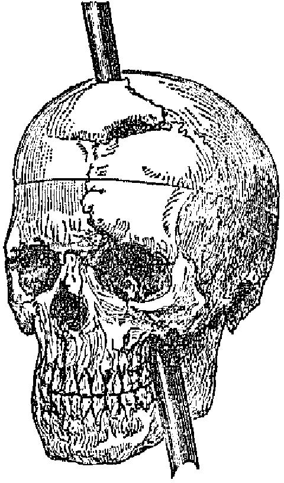
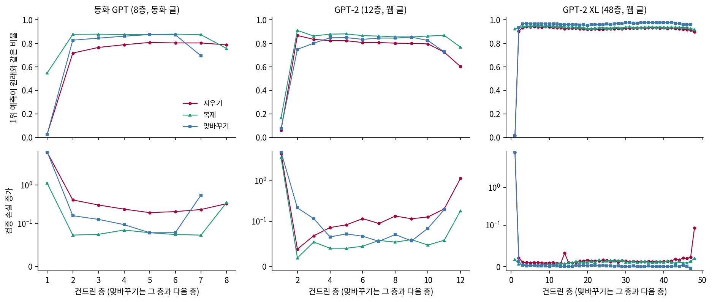
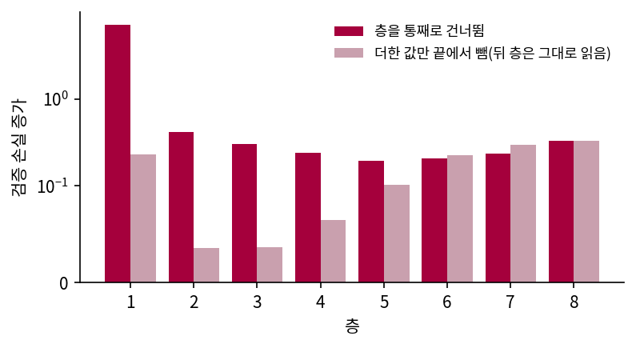

층을 지워 보기: 지우기, 복제, 맞바꾸기
렌즈와 탐침은 읽기만 하는 도구여서, 무엇이 벡터에 있는지는 말해 주지만 그것이 쓰이는지는 말해 주지 못한다. 쓰이는지 알려면 망가뜨려 봐야 하는데, 헤드 하나를 지워 본 것처럼 층 하나를 전부 빼면 같은 입력의 결과가 어떻게 변할까? 층마다 망가지는 정도는 어떻게 다를까?
역사: 쇠막대가 머리를 지나간 사람
사람의 뇌를 일부러 망가뜨릴 수는 없으니 연구자들은 사고로 망가진 뇌를 보았다. 어느 부위가 망가졌을 때 무엇을 잃는지 보면 그 부위가 하던 일을 추정할 수 있다는 생각이다. 가장 유명한 사례가 피니어스 게이지(Phineas Gage)다. 1848년 9월 13일 미국 버몬트의 철도 공사장에서 현장 감독이던 스물다섯 살의 게이지가 바위 구멍에 화약을 다지다가 불꽃을 일으켰고, 튀어 오른 쇠막대가 왼쪽 뺨 아래로 들어가 왼쪽 눈 뒤를 지나 머리 위로 빠져나갔다. 그는 살아남았고 곧 달구지에 앉아 숙소로 돌아가 구경꾼들에게 사고 이야기를 했으니 말하는 능력은 남은 것인데, 주치의 존 할로(John M. Harlow)는 1868년 보고에 그의 성격이 달라졌다고 적었다. 그 기록이 어디까지 정확한지는 뒷사람들이 따져 온 일이어서 여기서는 들어가지 않는다. 가져올 것은 손상된 자리에 따라 잃는 것이 다르다는 착상 하나다.

사람에게는 이 실험을 할 수 없지만 모델에게는 코드 한 줄이면 된다.
층 순서를 바꿔 끼우기
동화 GPT 의 층은 m.blocks 목록에 들어 있으므로 목록만 바꾸면 된다. 지우기는 그 층을 건너뛰고, 복제는 같은 층을 두 번 지나고, 맞바꾸기는 이웃한 두 층의 순서를 바꾼다. 파라미터는 하나도 고치지 않고 다시 학습도 하지 않는다.
# sources/layers/common_layers.py 에서 발췌
class Surgery:
def __init__(self, m, order):
self.m, self.order = m, order
def __enter__(self):
self.orig = self.m.blocks
self.m.blocks = nn.ModuleList([self.orig[i] for i in self.order])
return self.m
def __exit__(self, *a):
self.m.blocks = self.orig
재는 값은 넷이다. 검증 글의 다음 토큰 손실, 1위 예측이 원래 모델과 같은 비율(일치율), 정답 1위 비율, 그리고 예측이 얼마나 퍼졌는지 보는 엔트로피다. 동화 GPT 는 검증 글 조각을 씨앗 셋으로 뽑아(씨앗마다 65,536 토큰) 평균했다(sources/layers/layer_surgery.out).
## tiny, 글 tiny: 8층, 글 씨앗 3 (256 x 256 = 씨앗마다 65,536 토큰), 씨앗 평균 (일치율 범위)
조건 층 손실 일치율(범위) 정답1위 KL 엔트로피
원래 0 1.2424 1.0000 (1.000~1.000) 0.6619 0.0000 1.2440
지우기 1 8.3234 0.0272 (0.026~0.028) 0.0251 7.0822 4.8766
지우기 2 1.6548 0.7180 (0.716~0.720) 0.5706 0.4174 1.8144
지우기 3 1.5476 0.7656 (0.763~0.769) 0.5961 0.3115 1.8197
지우기 4 1.4807 0.7887 (0.787~0.790) 0.6072 0.2420 1.6679
지우기 5 1.4357 0.8082 (0.808~0.809) 0.6191 0.1945 1.5072
지우기 6 1.4481 0.8041 (0.801~0.807) 0.6163 0.2076 1.4989
지우기 7 1.4751 0.8037 (0.801~0.805) 0.6172 0.2255 1.3298
지우기 8 1.5728 0.7875 (0.786~0.790) 0.6105 0.3254 1.2951
복제 5 1.3213 0.8763 (0.875~0.878) 0.6469 0.0831 1.2547
맞바꾸기 1 8.4941 0.0249 (0.023~0.026) 0.0223 7.2529 4.5046
맞바꾸기 5 1.3213 0.8751 (0.875~0.876) 0.6441 0.0814 1.3724
맞바꾸기 7 1.7935 0.6944 (0.693~0.695) 0.5611 0.5496 1.5207
층 1 을 지우면 손실이 8.3234 로 뛰는데, 아무것도 모르고 4,096 토큰에 고른 확률을 주었을 때의 ln 4096 = 8.318 과 거의 같다. 일치율은 2.7% 이고 예측은 넓게 퍼지는데(엔트로피 4.8766), 고른 분포라면 엔트로피도 8.318 이어야 하니 손실이 비슷한 것은 고른 분포가 되어서가 아니라 틀린 곳에 확률을 주기 때문이다. 그런데 층 2 부터 층 8 까지는 어느 층을 지워도 일치율이 71.8~80.8% 이고, 손실도 1.2424 에서 1.44~1.65 로 올랐을 뿐이다.
「Once upon a time, there was a little girl named Lily. She」로 이어 쓰게 하면 숫자가 말하는 것이 눈에 보인다(그리디 선택, 시작 문장을 뺀 앞부분).
[원래]
She loved to play with her toys and have fun. One day, she found a big box in her room. She was very excited to see what was inside.
[층 1 지우기]
She and and and, track and and and and, edge and and and, w just steg just, edge's, it that the. it m haf fa in that the thatt fa in
[층 5 지우기]
She had a big, red ball that she loved to play with. One day, she went to the park with her mom and dad. Lily was very excited to play with her ball.
[층 8 지우기]
She loved to play with her toys and her friends. One day, Lily found a big, red ball in her yard. She was very happy and wanted to play with it.
[층 5 복제]
She loved to play with her toys and have fun. One day, she found a big box in her room. She was very excited to see what was inside.
[층 1·2 맞바꾸기]
She t. the tinging, tinging, the taking up up up up up withcinguggssisles to morningh to to and, togaking withbbinging with
[층 7·8 맞바꾸기]
She loved to make her own st a big, round strum. She had a big strum that she used to make her strum the most delicious and sweetest.

층 5 를 빼도 이야기를 써. 빨간 공 얘기까지 하고 있어.

층 1 을 빼면 「and and and」고. 층 하나의 무게가 이렇게 다를 수가 있어?
원 논문과 비교
이런 실험을 언어 모델에 체계적으로 한 것이 앞에서 본 라드 팀의 논문이다. 그들은 층을 지운 모델과 이웃을 맞바꾼 모델의 1위 예측이 원래 모델과 일치하는 비율을 쟀고, 파인튜닝 없이 72~95% 가 남는다고 보고했다. 첫 층과 마지막 층을 건드릴 때 가장 크게 나빠졌고, 첫 층을 건드리면 예측이 넓게 퍼졌다. 가운데 층에서는 맞바꾸기가 지우기보다 덜 해로웠고, 쓴 글은 웹 글 묶음(the Pile) 100 만 토큰이다. GPT-2 도 같은 방식으로 재면 다음과 같다. 글은 웹 글(ClimbMix)이고 씨앗마다 16,384 토큰으로 훨씬 적다(sources/layers/layer_surgery_gpt2.out).
## gpt2, 글 web: 12층, 글 씨앗 3 (64 x 256 = 씨앗마다 16,384 토큰), 씨앗 평균 (일치율 범위)
조건 층 손실 일치율(범위) 정답1위 KL 엔트로피
원래 0 3.3878 1.0000 (1.000~1.000) 0.3864 0.0000 3.5436
지우기 1 8.0559 0.0618 (0.060~0.063) 0.0361 4.5877 8.7243
지우기 6 3.5043 0.8074 (0.804~0.811) 0.3716 0.1172 3.9653
지우기 12 4.5434 0.6023 (0.599~0.605) 0.3268 1.2455 1.7116
맞바꾸기 7 3.4434 0.8454 (0.842~0.847) 0.3775 0.0653 3.6063
라드 팀이 쓴 모델 가운데 가장 큰 GPT-2 XL(48층, 파라미터 약 15억 개)은 반정밀도(bf16)로 돌렸고, 글은 씨앗 둘에 씨앗마다 8,192 토큰이다(sources/layers/layer_surgery_xl.out).
## gpt2-xl, 글 web: 48층, 글 씨앗 2 (32 x 256 = 씨앗마다 8,192 토큰), 씨앗 평균 (일치율 범위)
조건 층 손실 일치율(범위) 정답1위 KL 엔트로피
원래 0 2.9889 1.0000 (1.000~1.000) 0.4320 0.0000 2.9265
지우기 1 11.8261 0.0157 (0.015~0.017) 0.0065 8.9268 6.3682
지우기 24 3.0051 0.9207 (0.919~0.922) 0.4302 0.0187 2.9877
지우기 48 3.0817 0.8972 (0.894~0.900) 0.4209 0.1202 2.8961
맞바꾸기 24 2.9920 0.9632 (0.962~0.965) 0.4331 0.0042 2.9335
첫 층과 마지막 층을 뺀 지우기의 일치율은 8층 동화 GPT 가 71.8~80.8%, 12층 GPT-2 가 72.6~86.7%, 48층 XL 이 90.4~94.2% 다. 층이 많을수록 한 층이 맡은 일이 작아진다고 읽을 수 있는데, 글과 학습 방식이 모두 다른 모델이라 층 수만의 효과라고 단정할 수는 없다. XL 에서도 층 1 을 지우면 일치율 1.6% 로 무너지고 손실은 11.8261 로 ln 50257 = 10.82 보다 크다.

첫 층을 두 번 돌리면요?

모델마다 너무 달라서 규칙으로 말할 수 없어요.

원 논문과 같은 것부터 적으면, 첫 층이 치명적이고 그때 예측이 넓게 퍼지며 가운데 층이 견딘다는 것이 동화 GPT 에서도 GPT-2 에서도 나왔다. 가운데 층의 맞바꾸기가 지우기보다 덜 해로운 것도 같다(동화 GPT 층 5 지우기 80.8%, 맞바꾸기 87.5%). 숫자 범위도 첫 층과 마지막 층을 뺀 지우기와 맞바꾸기가 대체로 72~95% 안에 든다.
72~95% 는 논문 초록에 나오는 범위이고, 우리 표에서 첫 층은 2.7%, 6.2% 로 그 범위 밖이다. 논문 본문도 첫 층이 치명적이라고 적는다. 같은 설정에 씨앗만 바꿔 학습한 둘째 동화 GPT(sources/layers/train_seeds.py)에서도 모양은 같아서, 층 1 지우기는 3.2%, 층 2~8 지우기는 76.1~80.3% 였다.
첫 층은 왜 무너지고 가운데 층은 왜 버티나
라드 팀은 첫 층과 마지막 층을 건드릴 때 가장 크게 나빠졌다고 보고했다. 지우기 일치율을 첫 층, 가운데, 끝 층으로 묶으면 다음과 같다(sources/layers/front_mid_end.out 에서 세 줄을 모았다. 가운데는 동화 GPT 층 2~7, GPT-2 층 2~11, XL 층 2~47 이다).
지우기 일치율 첫 층 가운데 범위 끝 층
동화 GPT(8층) 0.0272 0.7180~0.8082 0.7875
GPT-2(12층) 0.0618 0.7256~0.8674 0.6023
GPT-2 XL(48층) 0.0157 0.9038~0.9424 0.8972
가운데 층이 버티는 이유로 라드 팀이 가설로 드는 것은 잔차 연결이다. 층을 건너뛰어도 h 는 끊기지 않아서, 앞 층까지 더한 합이 그대로 다음 층으로 가고 뒤 층들은 평소 읽던 것에서 한 층이 더한 벡터만 빠진 h 를 읽는다. 층마다 더하는 양은 h 크기의 3분의 1 정도이니, 지운다고 벡터가 다른 것이 되지는 않는다.

잔차를 빼고 지워 보면요?

그 비교는 이 크기와 시간에서는 제대로 안 나와요. 잔차 없는 쪽이 같은 실력까지 학습되지 않거든요. 이미지 모델로 잰 결과가 있어요. 2016년 파이트(Andreas Veit) 팀의 실험에서 15층 VGG 는 어느 층이든 지우면 우연 수준, 잔차 네트워크는 거의 그대로였어요. 그들은 잔차 네트워크를 길이가 다른 경로 여럿의 묶음으로 보고, 층 하나를 지우면 경로의 절반이 사라질 뿐이라고 설명했어요.
그렇다고 잔차만 있으면 버티는 것은 아니다. 잔차 연결이 있어도 3층 모델은 가운데 층을 지운 일치율이 35.9~43.2% 로 8층 모델보다 훨씬 낮다(sources/layers/no_skip3.out).
가운데 층을 하나씩 더 지워 보면 어디까지 버티는지 나온다. 동화 GPT 의 가운데 2개를 지우면 일치율 66.9%, 3개 48.9%, 4개 43.2%, 5개 27.0%, 6개 21.3% 로 고르게 내려간다. 첫 층과 끝 층만 남은 모델은 이렇게 쓴다.
[처음과 끝 한 층씩만 남기기]
그리디: Once upon a time, there was a little girl named Lily. She had a tiny seed to crawl around the crawets around the tiny bug crawled around the tiny bug crawled around the tiny bug crawled around the tiny bug crawled around the tiny bug crawled around the tiny bug
층 1 도 건너뛰면 h 는 이어지므로, 잔차 연결만으로는 층 1 이 왜 치명적인지 설명하지 못한다. 그래서 층을 건너뛰는 대신, 평소처럼 모든 층을 돌리고 마지막 h 에서 그 층이 더한 값만 뺀다. 이렇게 하면 뒤 층들은 정상적인 입력을 읽고, 빠지는 것은 그 층이 출력에 직접 보낸 값뿐이다. 표에서는 이것을 직접빼기라고 적었다.
조건 층 손실 일치율(범위)
지우기 1 8.3234 0.0272 (0.026~0.028)
직접빼기 1 1.4717 0.7868 (0.783~0.791)
지우기 2 1.6548 0.7180 (0.716~0.720)
직접빼기 2 1.2780 0.9072 (0.906~0.908)
지우기 5 1.4357 0.8082 (0.808~0.809)
직접빼기 5 1.3458 0.8507 (0.850~0.852)
지우기 8 1.5728 0.7875 (0.786~0.790)
직접빼기 8 1.5728 0.7875 (0.786~0.790)

층 1 이 더한 값을 마지막에서 빼는 것만으로는 일치율이 78.7% 나 남으니, 치명적인 것은 그 벡터를 뒤 층들이 읽지 못하는 일이다. 건너뛸 때와 값만 뺄 때를 나란히 놓으면 씨앗을 바꾼 둘째 모델은 3.2% 와 75.3%, GPT-2 는 6.2% 와 86.9% 로 모양이 같다. 뒤 일곱 층은 임베딩 대신 층 1 이 만든 큰 벡터를 읽도록 학습되었으니, 임베딩만 받으면 제대로 읽지 못한다. 뒤 층은 앞 층이 만든 벡터 위에 쌓는다. 라드 팀이 첫 층을 「임베딩의 연장」이라고 부른 것과 맞는 결과이고, 크기 측정에서 층 1 의 MLP 가 34.4 를 더했던 것과도 이어진다. 값만 빼는 일치율은 GPT-2 에서 층 2 95.9%, 층 9 84.3%, 층 12 60.2% 로 뒤로 갈수록 내려가니, 앞쪽 층은 뒤 층이 읽을 것을 적고 뒤쪽 층은 출력에 바로 적는 쪽에 가깝다.
그럼 지운 층이 맡던 일을 뒤 층이 메워 주는 거예요?
헤드를 지웠을 때 뒤 부품이 메운다는 보고는 있어요. 다만 불완전하고 프롬프트마다 달라요. 층 단위로 우리가 잰 적은 없어요.
끝 층은 숫자 셋으로 정리한다. 지우기 일치율이 GPT-2 60.2%, XL 89.7%, 동화 GPT 78.8% 다. GPT-2 는 가운데 어느 층보다 낮고, XL 은 가운데에서 가장 낮은 90.4% 바로 아래이며, 동화 GPT 는 가운데 범위 안이다. 끝 층을 건드리면 나쁘다는 논문의 결론은 이 크기의 표에서는 모델마다 정도가 다르다. 층 8 은 뒤에 읽을 층이 없으니, 위 표에서 지우기와 직접빼기의 두 줄이 같은 계산이다.
눈과 발성
민준은 화면을 한참 보다가 스크롤을 올렸는데, 층 1 을 지운 줄에서 손이 멈췄다.

이거 좀 그렇다. 「She and and and」. 멀쩡한 애가 갑자기.

체크포인트는 그대로 있어. with 블록 나오면 원래대로 돌아와.
알아. 아는데 왜 하필 앞이랑 끝이야? 혹시 이런 거 아닐까. 앞 층은 눈이고 끝 층은 발성. 눈이 글자를 알아봐야 뒤에서 뭘 할 수 있고, 뒤에서 정한 걸 발성이 토큰으로 내보내는 거지.

사람은 눈을 감아도 말은 하잖아. 층 1 을 지운 루나는 말이 다 망가졌어. 임베딩은 그대로 들어가는데도.
그럴듯한 물음이니 측정과 나눠서 적어 둬요. 잰 것은 「ip」가 층 1 을 지나 「␣rocket」 옆으로 가고, 층 1 이 만든 벡터가 없으면 뒤 층이 일을 못 한다는 데까지예요. 끝 층도 GPT-2 는 60.2% 까지 떨어지지만 동화 GPT 는 78.8% 이고 이야기를 잘 써요. 앞 층이 눈처럼 인식하는지, 끝 층이 발성처럼 표현하는지는 지금 숫자로 갈리지 않아요.
민준은 공책에 「앞 = 눈? 끝 = 발성? 안 잼」이라고 적었다.
게이지에게서 가져온 것도 자리에 따라 잃는 것이 다르다는 착상까지이고, 층 지우기는 사람의 뇌에 대해서는 아무것도 재지 않는다. 가운데 층이 하는 일은 렌즈에 잘 읽히지 않는다. 그 층에서 출력까지의 평균 자코비안을 곱해 읽는 자코비안 렌즈(거니 팀 2026)라는 방법이 있지만, 원 논문은 루나보다 훨씬 큰 모델에서 쟀고 작은 모델에서는 어떨지 모른다고 적었다. 8층 루나에서도 읽히는지는 직접 걸어 봐야 안다.
문제 7. 조립 공정과 칠판 회의
공장의 조립 라인은 여덟 공정이 앞 공정의 결과물만 받아 다음으로 넘긴다. 칠판 회의는 여덟 사람이 차례로 나와 칠판을 읽고 한 줄씩 덧붙인다. (가) 넷째 사람(공정)이 결근하면 각각 어떻게 되는가? (나) 첫 사람이 결근하면 칠판 회의도 괜찮은가? 첫 사람이 회의 안건을 영어에서 한국어로 옮겨 적는 역할이었다면?

조립 라인은 넷째 공정이 빠지면 다섯째가 받을 게 틀려서 전부 멈춰. 칠판은 한 줄이 빠질 뿐이고.
(나)는 안건 번역이면 얘기가 달라지네. 뒤의 일곱 사람은 한국어 안건을 읽는 데 익숙한데 칠판에 영어만 있으면 아무도 못 읽어. 칠판 회의여도 그 사람은 빠지면 안 돼.
그럼 층 1 은 어느 쪽 사람일까요?

번역하는 사람이요. 층 1 의 MLP 가 34.4 짜리 벡터를 쓰고 뒤 일곱 층이 그걸 읽으니까요. 칠판 회의라도 다음 사람이 읽을 형식을 만드는 사람은 대신할 수가 없네요.
문제 8. 지우면 경로가 몇 개 남나
파이트 팀의 설명을 세어 보자. 층마다 잔차 연결이 하나 있는 모델은 입력에서 출력까지 층마다 「지나간다」와 「건너뛴다」를 고를 수 있다(층 안의 어텐션과 MLP 를 한 덩어리로 본다). (가) 층이 L 개면 경로는 몇 개인가? 8층이면? (나) 층 하나를 지우면 몇 개가 남는가? (다) 8층의 경로 가운데 층을 정확히 4개 지나는 경로는 몇 개인가? (라) 잔차 연결이 없으면 경로는 몇 개이고, 하나를 지우면 몇 개인가?
층마다 두 가지니까 2^L, 8층이면 256 개. 층 하나를 지우면 그 층을 지나는 경로가 다 없어지니까 절반인 128 개가 남아.
(다)는 8 개에서 4 개 고르는 거니까 8·7·6·5 ÷ 24 = 70 개. 전체의 4분의 1 이 넘는 경로가 층을 넷만 지나네. 8층 모델인데 경로로 보면 절반 깊이짜리가 제일 많아.
(라)는요?
없으면 경로가 하나뿐이고, 지우면 0 개요.
그런데 경로 수로만 보면 층 1 을 지워도 128 개가 남잖아요. 그런데 일치율은 2.7% 예요. 경로 수만으로는 안 되네요.
맞아요. 경로를 세는 그림은 경로들이 서로 독립이라고 보는데, 실제로는 뒤 층들이 층 1 을 지난 입력에 맞춰 학습되었어요. 그림이 맞는 데까지 쓰고, 나머지는 재서 확인해야 해요.
문제 9. 복제가 지우기보다 덜 해로운 이유
동화 GPT 에서 층 2~7 은 지우면 일치율 71.8~80.8%, 복제하면 87.4~87.9% 다. 복제의 일치율이 지우기보다 높은 것을 h 의 크기로 설명해 보라.
가운데 층이 더하는 건 h 크기의 3분의 1 정도야. 지우면 그만큼 빠지고, 복제하면 그만큼 더 들어가는 건데… 크기는 같은데 왜 복제가 낫지?
복제하면 원래 있던 건 다 있잖아. 그 층이 원래 더하던 값도 있고 비슷한 값이 하나 더 있으니까, 필요한 게 빠지지는 않아. 지우면 그 층에서만 나오는 게 없어지고.
그렇게 읽을 수 있어요. 복제한 층이 어떤 벡터를 더했는지 잰 것은 아니니 짐작으로 둬요.